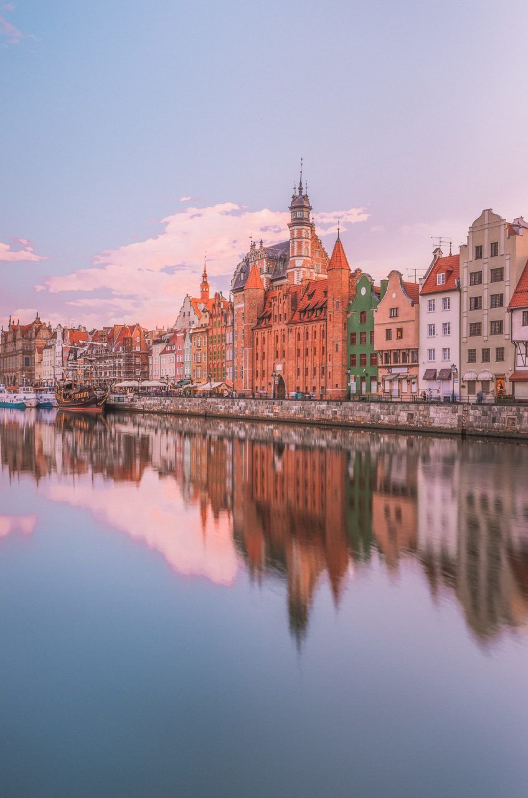

1. Austria
- Austria are unele dintre cele mai înalte standarde de viață din lume.
- Austria a aderat la Uniunea Europeană în 1995, iar moneda euro în 1999.
- Austria este casa unora dintre cei mai cunoscuți compozitori de muzică clasică pe care i-a văzut vreodată lumea, printre care Joseph Haydn, Franz Liszt, Franz Schubert și Wolfgang Amadeus Mozart.
2. Belgia
- Belgia a existat doar ca națiune suverană de doar puțin de 200 de ani. În ciuda tânărului său regat, numele „Belgia” are rute antice care datează din antichitate.
- Belgia are trei limbi oficiale: franceză, germană și olandeză.
- Belgienii spun că ei sunt ,,născuți cu o cărămidă în stomac'' , de aceea fiecare belgian încearca să-și cumpere sau să-și construiască o casă cât de repede posibil.
3. Bulgaria
- Bulgaria este una dintre cele mai vechi țări din Europa. De asemenea, este singura țară, care nu și-a schimbat niciodată numele de la înființarea sa în 681.
- Pe 14 februarie, în timp ce restul lumii sărbătorește Ziua Îndrăgostiților, bulgarii îl sărbătoresc pe Trifon Zarezan. El este patronul viticultorilor și producătorilor de vin.
- Un fapt inexplicabil de comunicare al bulgarilor este că își învârt capul spre stânga și dreapta pentru da și dau din cap pentru nu. Nu vă întrebați de ce, mergeți doar cu fluxul!
4. Cehia
- În Republica Cehă există peste 2000 de castele și cetăți, mai multe decât în orice altă țară din Europa. Unele dintre cele mai cunoscute sunt Castelul Hluboká, Castelul Orlík, Castelul Lednice și Castelul Karlštejn.
- Johan Gregor Mendel s-a născut în Cehia. Mendel a pus bazele principiilor de genetică și moștenire, ce sunt încă studiate la orele de biologie din întreaga lume.
- Republica Cehă are o economie avansată și un nivel ridicat de trai.
5. Cipru
- Legenda spune că zeița greacă a iubirii, Afrodita, s-a născut în Cipru. Țara este cunoscută și ca locul de joacă al Zeilor.
- Insula este împărțită în două părți. Partea de nord este numită „Republica Turcă a Ciprului de Nord”, în timp ce partea de sud este numită „Republica independentă Cipru” sau „Cipru grecesc”.
- Capitala Ciprului, Nicosia, este împărțită la „Linia verde”. Este singura capitală din lume care este împărțită între două națiuni.
6. Croația
- În nord-vestul Croației, veți găsi un oraș mic numit „Hum” despre care se spune că deține un record mondial pentru că este cel mai mic oraș din lume. Conform surselor, are o populație între 17 și 23 de ani.
- În limba croată, țara se numește Hrvatska, iar limba se numește Hrvatski.
- Moneda croată, kuna, poartă numele de marten, un mic animal asemănător cu dihorul cunoscut pentru blana sa de lux.
7. Danemarca
- Danemarca a fost numită cea mai fericită țară din lume în numeroase rânduri și rămâne în topul raportului ONU al fericirii mondiale.
- Regatul Danemarcei include, pe lângă Danemarca, zonele de autoguvernare din Groenlanda și Insulele Feroe.
- Danemarca se învecinează cu o singură țară, Germania.
8. Estonia
- Estonia este una dintre țările cel mai puțin aglomerate din Europa, cu o densitate a populației de 28,4 persoane pe kilometru pătrat.
- Estonia a fost prima țară din lume care a adoptat votul online, în 2005.
- 52% din țară este pădure, ceea ce o face una dintre cele mai verzi țări din Europa, iar această cifră este în creștere.
9. Finlanda
- Finlandezii oferă educație gratuită pentru studenți, chiar și la nivel universitar. Acest lucru este valabil și pentru studenții internaționali din EU / EES.
- În timpul iernii, puteți vedea Luminile de Nord să trăiți noaptea polară în zonele de nord ale țării.
- Finlanda a fost prima țară din Europa care a dat dreptul la vot tuturor femeilor.
10. Franța
- Franța este cea mai populară destinație turistică din lume.
- Liberté, egalitié, fraternité care înseamnă „libertate, egalitate și fraternitate” (sau frăție) este deviza națională a Franței.
- Aproximativ un milion de francezi care locuiesc în apropierea graniței cu Italia vorbesc italiană.
11. Germania
- Cel mai lung cuvânt care a fost publicat este Donaudampfschifffahrtselektrizitätenhauptbetriebswerkbauunterbeamtengesellschaft și are 79 de litere.
- Cel mai mare festival al berii din lume este, desigur, Oktoberfest din Munchen, Bavaria, unde dimensiunea paharului de bere nu este de 500 ml, ci un litru întreg.
- În Germania nu există nicio pedeapsă pentru un deținut care încearcă să scape din pușcărie.
12. Grecia
- La nunțile tradiționale grecești, toți dansează și aruncă farfurii.
- În Grecia sunt mai mulți turiști decât greci în timpul verii.
- Limba greacă este unică și a fost folosită continuu de mai bine de 5000 de ani. Acest lucru face ca limba să fie cel mai vechi limbaj scris încă existent.
13. Irlanda
- Harpa este simbolul național al Irlandei și este prezent pe fața pașapoartelor irlandeze.
- Irlandezii vorbesc engleza, dar elevii sunt încă învățați irlandeză în școli, care este o limbă gaelică.
- Drapelul Irlandei are trei culori dintr-un motiv. Verdele reprezintă tradiția gaelică a Irlandei, portocaliul îi reprezintă pe cei care l-au urmat pe William of Orange, iar dunga albă din mijloc reprezintă pacea între ambele.
14. Luxemburg
- Luxemburgienii sunt de obicei tri-linguali, țara având trei limbi oficiale: germană, franceză și luxemburgheză sau Lëtzebuergesch.
- Bucătăria luxemburgheză este puternic influențată atât de tradițiile culinare franceze, cât și de cele germane.
- Luxemburg are cea mai mare rată de proprietate auto din lume, cu o medie de 647 de proprietari de autovehicule pentru fiecare 1,000 de locuitori.
15. Italia
- Culorile drapelului italian reprezintă speranța (verde), credința (alb) și caritatea (roșu). Un alt fapt interesant este faptul că drapelul a fost inspirat de drapelul francez de design similar.
- Savantul italian Alessandro Volta a creat prima baterie în 1800. Voltul, unitatea de energie electrică, poartă numele acestuia.
- Italienii sunt cunoscuți pentru comunicarea cu gesturile mâinii și expresiile faciale. De asemenea, sunt cunoscuți că întârzie des.
16. Letonia
- Letonia are cele mai înalte femei din lume, iar doamna obișnuită a ajuns la un impresionant 170 cm. Nici bărbații nu sunt mici de statură, deținând locul patru.
- Una dintre atracțiile orașului port Liepaja este o noapte în închisoare. Cartierul bântuitor Karosta oferă cazare în vechea închisoare militară completată cu tratament în stil sovietic.
- Chiar dacă statul Letonia a fost fondat abia în 1918, drapelul său datează din 1279 și este unul dintre cele mai vechi trei stegauri din lume.
17. Lituania
- Lituania are una dintre cele mai rapide conexiuni la Internet din lume. De asemenea, există multe puncte WiFi gratuite în jurul celor mai mari orașe.
- În Lituania ouăle de Paște nu sunt aduse de niște iepurași drăguți și pufoși , ci de bunica de Paște („Velykų Bobute”) .
- Lituania are cel mai mare număr de baloane cu aer cald pe cap de locuitor din orice țară din lume.
18. Malta
- Există 365 de biserici în Malta, una pentru fiecare zi a anului.
- Între Malta și Sicilia există un pod subteran adânc de 100.584 de metri folosit pentru a le conecta.
- Malta a aparținut odată Marii Britanii, dar din 1964 Malta este țară independentă.
19. Olanda
- Olanda mai are în jur de o mie de mori de vânt de lucru vechi.
- Nu există nicio țară în lume în care se consumă mai multă licorici decât în Olanda: 32 de milioane de kilograme pe an.
- Olandezii sunt cei mai înalți oameni din lume.
20. Polonia
- Polonia are a doua cea mai veche universitate din Europa. Universitatea Jagiellonian a fost fondată de regele Casimir III cel Mare în 1364.
- Marie Curie, femeia care a descoperit pe Poloniu și pe Radiu, nu era franțuizoaică, ci poloneză. Numele ei era Marie Sklodowska înainte de a se căsători cu un francez pe nume Pierre Curie.
- Polonia are una dintre cele mai vechi mine de sare din lume. Mina de sare Wieliczka a fost construită în secolul al XIII-lea.
21. Portugalia
- Cea mai veche librărie din lume se află în capitala Portugaliei. Înființată în 1732, librăria Bertrand, aflată în Lisabona, Portugalia, este cea mai veche librărie de operare.
- Portugalia are cel mai lung pod din Europa. Podul Vasco da Gama din Lisabona are 17 kilometri, ceea ce îl face cel mai lung din Europa.
- Portugalia are aceleași granițe definite încă din 1139, devenind astfel cel mai vechi stat național din Europa.
22. Romania
- Palatul Parlamentului din capitala României este a doua clădire ca mărime din lume. Clădirea are 84 m înălțime. Este, de asemenea, cea mai grea clădire din lume.
- Bucureștiul este numit și „Micul Paris”. Arcul de Triumf al orașului a fost construit în 1935 pentru a fi modelat după Arcul de Triumf din Paris.
- Castelul Peleș din Sinaia a fost primul castel european luminat în întregime de curent electric.
- În 1889, Timișoara a devenit primul oraș din Europa care a avut iluminat electric de stradă.
23. Slovacia
- Până acum sase mii de peșteri au fost descoperite în Slovacia! Cele mai multe peșteri spectaculoase pot fi găsite în parcurile naționale din Tatra joasă, Paradisul slovac și Karstul slovac.
- Pitorescul sat din Čičmany din Slovacia de Nord are un statut de primă rezervare mondială de arhitectură populară.
- Capitala Slovaciei, Bratislava, se află la granițele cu Austria și Ungaria. Acest lucru face ca orașul să fie singura capitală din lume care mărginește două țări independente.
24. Slovenia
Slovenia are 27.000 de kilometri de râuri.
- Slovenia este o țară viticolă excepțională.
- Podul Solkan este cel mai lung pod feroviar din piatră.
25. Spania
- Spania este a doua țară ca mărime din UE.
- De-a lungul secolelor, Spania a produs unii dintre cei mai mari artiști din lume.
- Spania este țara petrecerilor, cu sute de festivaluri care au loc pe tot parcursul anului.
26. Ungaria
- Ungaria a fost cândva parte a lumii celtice, apoi a Imperiului Roman. După căderea Romei, hunii s-au stabilit în câmpiile Pannoniei și au dat numele Ungariei.
- Limba maghiară este cunoscută sub numele de Magyar și este descendența directă a limbii vorbite de hunii.
- În Ungaria este considerat nepoliticos să ciocnești paharele de bere.



Țările Uniunii Europene